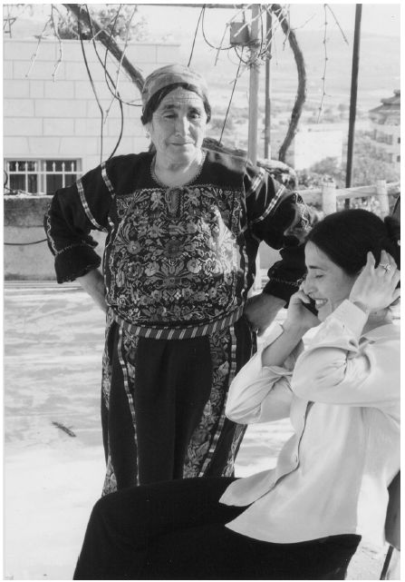

为了政治事业或由倡导者和激进分子所制作的纪录片，和政府宣传片呈现的问题很类似，但它们生存的环境不同。
美国公民自由联盟出品的《自由档案》或《塞拉俱乐部纪事》这样的倡导纪录片（两者都在美国公民自由联盟电视台播出），和弗拉克·卡普拉的战时宣传纪录片，有什么不同呢？两者都是制作人为了某些机构而拍摄的，目的都是为了宣扬该机构的目标。两者的本质不同在于赞助机构的性质。国家对公民运用的是一种独一无二的权力和权威，其宣传常常是其镇压工具中的一种。
相反，在一个开明的社会里，民间团体对于自身目标的宣传，被认为有益于建设一个活跃的公共领域（有极少数例外，比如对叛国和淫秽的宣传）。如果一个社会拥有众多不同的民间团体，它们可以表达不同观点并吸引公众加入，这样的民间团体活动越多，这个社会似乎就越健康。美国的法律更是在宪法第一修正案中定下支持言论自由的原则，用最高法院大法官路易斯·布兰代斯的话说：不良言论的纠正办法是更多的言论。
那么，美国保守派倡导团体“公民联合”拍摄的倡导纪录片《摄氏41.11度》和该片所针对的、备受争议的独立纪录片《华氏9·11》，又有什么不同？答案有两个：一是倡导纪录片依附于某个组织；二是倡导纪录片通过激发公众的实际行动，致力于支持该组织的事业。你可以同意迈克尔·莫尔的观点，也可以不同意，但就算他是名人，他也只是代表他自己。莫尔的观点会引起人们的讨论，也许会让一些观众对国家的外交政策产生不同意见（也有一些人会攻击迈克尔·莫尔和自由派人士）。这类影片是对公共言论的直接干预。倡导纪录片则与之相反，是一个组织为了特定的问题或事业而动员公众行动的工具。
倡导者或激进人士常常选择纪录片作为他们的工具，是因为用它来对抗主流媒体中对于现状的描绘，相对成本较低。在寻找吸引观众的最有效方法的过程中，制作人对于倡导纪录片的主题和形式问题花费了很多心思。倡导纪录片通常焦点明确，其制作目的就是为了动员观众从事一项特定的行动。和政府宣传片一样，这些影片的制作人很可能非常认同某个组织的目标，带着诚意去制作。和政府宣传片一样，对于想懂得说服技巧的人来说，这些影片很值得重视——没有什么像现实一样具有说服力。
“责任感”
在动荡不安的20世纪30年代，大萧条从根本上动摇了许多人对于资本主义未来的信念。此时的许多左翼政治团体，以及许多被赶时髦的左翼年轻人占据的电影俱乐部，都将纪录片看作挑战现状的工具。他们想要拍摄“责任感”纪录片——用这样的纪录片来支持社会变革甚至革命。
在欧洲大陆、英国、日本和美国，热切的年轻人在遍布全球的电影俱乐部里讨论着韦尔托夫、爱森斯坦、弗莱厄蒂和格里尔森团队的近期作品。受韦尔托夫《电影真理报》新闻短片的影响，他们制作了自己的新闻短片，反击电影院中播放的那些流行的、常常带有右翼色彩的纪录片。在美国，电影与摄影协会制作了家喻户晓的以工人为主角的系列新闻短片，主要报道罢工与游行。这些纪录片简单地记录事件，拍摄时对工人报以同情的目光。制作人互相观看各自制作的影片，也放给其团体的新成员看，放给政治团体和集会群众看。
这些政党和电影俱乐部培育了一批纪录片人。为罗斯福政府的佩尔·洛伦茨工作的纪录片制作人，以及荷兰激进派纪录片制作人约里斯·伊文思都从这些地方开始他们的职业生涯。他们的作品风格强硬，短纪录片《博里那奇矿区》（1933）就是其中一例，该片由伊文思和比利时电影俱乐部的领袖人物亨利·斯托克联合制作，描绘了一群被生产过剩这一经典资本主义危机残酷逼入贫困境地的煤矿工人。斯托克后来曾经说：“我们想用最震撼的画面高喊出我们的愤怒。”该片充满了说教而愤怒的谴责，片中运用了搬演和带有批判意味的并列展示手法。
随着大萧条形势日益严峻，在许多国家，与苏联联系紧密的共产党威望逐渐上升。共产党对于世界的进步政治产生了很大影响，也对与进步政治有关的作品产生了很大影响，其中包括电影。比如，美国电影与摄影协会的许多制作人都是共产党员，该组织也是共产党“文化前沿阵地”的非正式成员。
与共产党的联系对纪录片至关重要：不仅产生了圈子，让人们可以整合资源，还带来了观众，并且让影片有了明确的信息。西班牙内战可以很好地说明这一问题。1936年，包括佛朗哥在内的军官对左翼的、由人民阵线领导的共和政府发动政变，内战随即爆发。共和政府在共产党的支持下进行反击，共产党的背后有来自苏联的支持。西班牙共产党的领导人物反对无政府主义等其他政治派别。1939年，佛朗哥在纳粹的支持下获胜。一些国际势力认为这场战争是反法西斯斗争，需要全世界团结一致来应对，而另外一些反共势力则将其视为西班牙内政，认为自己不应当干涉。
世界各地的纪录片制作人组织起来，拍摄有关这场战争的电影，为反佛朗哥力量募集支持和资金。这些电影对西班牙内部的派系争斗一笔带过，倡导全世界支持共和政府，以适应共产党的需求。《西班牙土地》（1937）是这一背景下最著名的纪录片之一。该片的制作团队由来自不同国家的人组成——导演是伊文思，影片编辑是海伦·范东恩，欧内斯特·海明威则担任了编剧和旁白——幕后赞助来自好莱坞。该片展示了一种艺术地展现政治真相的方法，附带体现出伊文思在运用美学技巧方面日益多才多艺；直到1989年去世之前，伊文思都是激进派纪录片制作人的领头先锋，许多人以他为师。
这部影片的方法让人想起了罗伯特·弗莱厄蒂的浪漫现实主义。它带领观众来到了马德里附近一个小村庄的日常生活中。影片拍摄时交战正激烈。影片主要记录了一条灌溉渠的建设，灌溉区出产的粮食供应战斗中的马德里地区，因而十分重要。镜头聚焦于日常生活中的点滴，带观众观看村民的劳作和习惯。观众可以看到，战争也成了村民日常生活的一部分。观众看到村民扛枪、放哨、查看轰炸过后的废墟的情形。村民们对反佛朗哥事业的大力支持融入了他们日常的价值观和生活中。
在海明威简洁的解说词的配合下，伊文思竭力避开了有关国内派别斗争的复杂政治问题。该片主要传达的是人性的温暖而不是政治信息。伊文思用现实主义的技巧唤醒观众的情感。虽然影片上映的时间不长，却在影院、电影俱乐部和私人场合都播放过，为反佛朗哥的共和人士筹集到了很大一笔资金。
影片《西班牙土地》也对当时激进派纪录片制作人中的一场论争作出了回应：是应该制作“鼓动性”电影动员自己的民众起来战斗，还是应该用影片说服更多的观众相信某种观点？第二种方法需要更多的艺术技巧，而《西班牙土地》成功地做到了这一点。纽约的一些纪录片制作人由于政治和审美取向不同，与电影及摄影协会分道扬镳，之后成立了电影制作社团“纽约电影”。他们也采取了后一种方法，制作了当时另一部著名的倡导纪录片《家乡》（1942）。剧中运用了戏剧性的搬演，展现了国会对多起违反公民自由的行径的一桩调查，努力想要鼓舞公民要求更多的社会正义以及合理公平的法律待遇。不过，该片无法与好莱坞的影片制作水准抗衡；到了1942年，片中要传达的观点也淹没在战时的爱国主义热情中。
第二次世界大战的到来给许多“责任感”电影实验画上了句号。在德国和日本，政府无情地对各种电影俱乐部实施镇压。共产主义者开始遭到政治迫害；1956年后苏联共产党对斯大林主义恐怖政治的批判，意味着对苏联的自我否定，加上苏联对匈牙利的进攻，这些因素综合在一起，使很多知识分子和艺术家远离了政治。
“第三电影”
20世纪60年代，民权运动和人权运动方兴未艾，反殖民斗争风起云涌，核武器和冷战军备竞赛如火如荼，这些都标志着一个政治动荡的年代。技术的突飞猛进使得真实电影成为可能，1967年便携录像设备的产生开启了录像时代，这促使很多人再次将纪录片看作政治运动中的工具。
激进派的纪录片制作人将自己看作变革的文化先锋。这些人常常是学生或者是已经离开学校却仍混迹大学圈的人，他们成立了一些团体或项目组，分享工作和利益。在美国，纽约、旧金山和芝加哥等地都成立了一些新闻短片制作团体，它们以唤起劳工阶级对于社会不公正现象的认识为己任。在法国，在1968年大罢工的酝酿阶段，让——吕克·戈达尔和其他电影人成立了名字响亮却昙花一现的济加·韦尔托夫电影小组，对先锋的电影手段进行实验。克里斯·马克则和其他人成立了更加带有军事色彩的组织“火星报”，这是根据列宁创办的地下报纸命名的，其拍摄主要聚焦于劳工事件。在英国的伦敦纪录片制作人合作社和伦敦女性电影合作社等团体中，成员们都在讨论什么样的影片风格更引人入胜和影片应该针对什么样的观众。
电影人之间的联系常常是跨国的。在南非和全世界，反种族隔离的激进主义者用纪录片《对话的终结》（1971）来号召全世界的支持。影片由流亡伦敦的电影人制作，严肃地暴露了南非富有白人和黑人之间日常生活的鲜明对比。在印度，激进的纪录片制作人阿南德·帕特瓦尔丹和示威者们一起记录下了他们反抗政府腐败的斗争。他将影带偷带出国，并在加拿大开始了一份工作；在加拿大，他和印度临时政府的反对者一起制作了《革命的浪潮》（1975）。该片在全世界公映（在印度却被禁演），政治组织用它作为工具，组织反抗临时政府的行动。
在整个拉丁美洲，受到古巴革命反抗美国霸权的鼓舞，纪录片制作人联合起来工作，逐渐形成了一个“第三电影”的概念，这个词被用来描述全世界范围内的激进主义电影。践行这一概念的，不仅有发展中国家的纪录片制作人，还有世界其他地区那些觉得自己被边缘化或认为自己代表被压迫者的电影制作人。
“第三电影”一词来源于“第三世界”的概念，指的是在冷战时期超级大国的斗争中寻求独立的国家或文化运动。它让人们看到政治变革的希望，但这种政治变革已经不再依附于苏联共产党。全世界的知识分子和艺术家将文化看作这一运动的武器。拉丁美洲独立和不同政见电影运动——nuevo cine，在巴西被叫做cinema novo——在第三电影运动中成了开路先锋，用迈克尔·沙南的话来说，纪录片是第三电影的重要特征。
古巴1960年将电影业收归国有。在自己国家遭受攻击的独立纪录片制作人聚集于此，制作影片并寻求支持。（约里斯·伊文思20世纪60年代就曾和一些古巴纪录片制作的领军人物一起工作。）古巴摄影师兼纪录片制作人圣地亚哥·阿尔瓦雷斯创立了古巴自己的《电影眼睛》新闻短片，自己也制作了许多纪录片。这些影片不仅表达了对不公平现象的极度愤怒，也以抒情的方式表达了对革命的支持。阿尔瓦雷斯最早的纪录片之一《现在》（1965）因为使用了搜集来的图片而显得很有意思。在片中阿尔瓦雷斯用从杂志和报纸上找来的、有关种族冲突的图片，抨击了美国的种族主义。影片的背景乐是莉娜·霍恩演唱的一首关于自由的歌。
在阿根廷，费尔南多·比里成立了一个关心社会现实的电影流派，第一部作品是《给我一个铜板》（1960），影片展示了一群孩子通过向过路的列车乘客乞讨来养活他们家庭的故事。影片部分借鉴了比里在意大利学到的新现实主义风格，几乎没有旁白评论，只是追拍孩子们跟着列车奔跑的场景：这是通过镜头展示来表达批判。
随着阿根廷政局对立日趋紧张，接受比里指导或受到其启发的纪录片制作人纷纷参与有组织的抵抗或武装斗争，他们常常受到迫害甚至可能“消失”。
运动中最有影响力的纪录片制作人里，有阿根廷纪录片制作人费尔南多·索拉纳斯和阿根廷社会学家奥克塔维奥·赫蒂诺。他们两人一起发布了一个口气颇大且很有影响的宣言，呼吁“第三电影”。（前两种电影分别是好莱坞电影和“艺术”或作者电影。）他们断言，电影不应当仅仅是格里尔森所说的“锤子”，它本身就应当是一个“去殖民化”的行动。他们的目标是“将审美融入社会生活中”，让知识分子和大众一样与革命紧密相连。理论上，这样的电影应当由革命团体制作，在“解放了的空间”播放。不会再有纯粹的观看者，集体生产的艺术会煽动观众投入行动。这样的电影能够对最强悍的敌人发起攻击——这个敌人在我们所有人的内心，会抵制革命“新人”的产生，而古巴正在制造这样的新人。
在“自由电影集团”内部，索拉纳斯和赫蒂诺在纪录片《燃火的时刻》（1968）中实践了他们的理论。该片共分三部，加起来时长超过四个小时，片中时而抨击，时而关注，时而解释，时而思考，像一位愤怒的教授振聋发聩地质问他的学生。第一部分有关阿根廷的新殖民主义。第二部分表现了深受工人阶级爱戴的阿根廷社团主义派总统胡安·庇隆的崛起，并对1955年推翻他的那次政变表示了反对。第三部分是对于通向革命未来的道路的思考。影片运用了很多让人困惑和震惊的技法：单词瞬间复制布满整屏的幕间标题、空白屏幕，还有一个对切·格瓦拉死后面孔连续五分钟的展示，而影片正是献给这位人物的。
该片在阿根廷和其他拉丁美洲国家秘密播放，也在世界其他地方的电影节和影院广为播映。
在美国，《燃火的时刻》在激进政治团体中很流行，比如在芝加哥，波多黎各人团体“青年洛德党”就播放了该片。索拉纳斯、赫蒂诺和其他很多人之后很快逃亡国外。
其他较有价值的“第三电影”多由流亡人士完成，比如智利的纪录片制作人帕特里西奥·古斯曼的三部曲长篇纪录片《智利之战》（1975——1979）。古斯曼是约里斯·伊文思亲手栽培的又一位弟子。伊文思1969年的作品《瓦尔帕莱索，我的爱》就由他担任摄像，片中将瓦尔帕莱索这座智利港口城市的贫富状况进行了尖锐的对比。（克里斯·马克为这部城市交响曲纪录片撰写了解说词。）
《智利之战》中有珍贵的录像脚本，是从一项记录萨尔瓦多·阿连德总统生涯的为期三年的录影项目中抢救出来的。军事政变推翻阿连德的统治后，这一拍摄也就停止了。古斯曼将录像偷带出境，逃亡欧洲。这一电影项目成了全世界动员人们反抗军政府的工具。该片最终在法国完成，得到了左翼电影俱乐部和古巴收归国有的电影组织“古巴电影艺术与工业协会”的帮助，在除了智利之外的其他国家得以播放。《智利之战》批评了智利的一些军方组织、中产阶级以及美国政府，指责他们推翻了一个合法的、经选举产生的政府。充满悬念的剪辑和简洁的解说勾勒出导致这一悲剧的过程。
纪录片人对“第三电影”、真实电影和草根录像的政治能量很感兴趣，因而在全球范围内掀起了影片制作的热潮。在日本，小川绅介领导的一个电影制作小组，将农民抗议建设成田机场的行动拍成纪录片。其中的一部《第二堡垒的农民们》（1971）在租用的市政大厦内向全日本进行播放，在各个左翼组织的配合下，在全世界广为流传。小川绅介后来一生都在制作这样的影片。
在和成田的村民们一起生活了多年之后，他又搬到了山形县的小村庄，制作了几部纪录片，拍摄那里人们的生活。另一部日本纪录片由一个小渔村的居民和导演土本典昭合作，记录了该村村民由于工厂污水排放导致汞中毒，因而声讨正义的情况。这部名为《水俣病》（1971）的片子引起了全世界对汞污染的重视，也使日本政府蒙羞，不得不正视这一问题。之后，土本继续用纪录片来吸引全世界对该问题的重视，也利用纪录片继续与水俣的村民合作，对政府施加压力以解决汞污染相关问题。在20世纪70年代的中国台湾地区，当地政府不愿承认对台湾原住民的压迫。70年代后期，一群艺术家制作了系列电视纪录片《芬芳宝岛》，歌颂了台湾原住民文化的美。该片不但出了一系列续集，也催生了一系列的社会批评语汇。
苏联铁腕统治下的地区没有言论自由，一切反抗组织均被粉碎，这里的纪录片人将观点直接或间接地寓于作品中，巧妙地混过审查。在苏联统治下的东欧，所谓的“黑纪录片”或“持异见者纪录片”十分盛行。爱德华·斯科泽斯基和克日什托夫·凯希洛夫斯基等波兰制作人的纪录片作品，观察敏锐，给观众提供了一面镜子，映射令人困惑的现实。
20世纪六七十年代的倡导纪录片，和其他时代的纪录片一样，是理想主义和实用主义的结合。这些影片中使用了之前纪录片人所开创的所有手段。《给我一个铜板》等影片中运用了弗莱厄蒂派的现实主义和新现实主义策略，让观众看到新的现实。格里尔森派的社会任务传统也在各种纪录片中发扬光大，但此时纪录片的任务不是为了巩固国家政权而是为了推翻它。在戈达尔的实验纪录片中则可以看到韦尔托夫式的眼花缭乱的形式挑战，在古巴的纪录片中也可以看到苏联纪录片制作人的影响。倡导纪录片人士对影片的形式选择问题进行了激烈的辩论。
他们也利用各种创新，让自己的作品更加生动。真实电影的设备和技术也很快被运用。不过，居于统治地位的还是实用主义。比如，如果一部真实电影的纪录片需要旁白才能说明问题，那么制作人就会运用旁白。
留下的财富
“责任感”电影、第三电影或激进电影的榜样影响广为传播，直到现在还会应危机和机遇的需要，重新浮出水面。20世纪70年代，韩国的一些年轻人接触到了法国和德国一些文化中心的激进思潮，在80年代政治破冰运动“汉城之春”行动中，制作了劳工和农村题材的“人民的电影”，为以后独立电影组织的形成奠定了基础。汉城视觉艺术组织的目标是“为大众争取社会权利”。在中国，20世纪90年代之后电影人们开始了“新纪录片”运动，更注重实录而非豪言壮语，这无形中挑战了某些教条，鼓励了各种意见。吴文光的《流浪北京》（1991）是关于大城市中边缘艺人的纪录片，对城市激进人士来说是一部里程碑式的电影。在21世纪初的阿根廷，在全国性金融危机过后，电影制作团体成为政治动员的力量，和政治及劳工团体合作拍摄电影。
激进派电影制作潮流中产生了很多机构。其中不少影片发行机构都是20世纪60年代“责任感”电影制作中留下的，如加拿大的DEC电影集团、美国的“女性制作电影”（一家带有女权主义色彩的经销商）、“第三世界新闻短片”（主要制作关于有色人种的社会批评影片）、“加州新闻短片”（主要题材与非裔美国人、非洲、种族和劳工问题相关）、“新一天”（一家鼓励电影人自行发行影片的机构）、法国的“火星报”等。一些组织开始播出传达草根和区域性声音的片子，比如美国的“城市社区电视中心”和“阿巴工坊”，它们长期运营，并培育了新一代的纪录片制作人。有线接入中心是美国特有的，诞生于当时媒体激进主义的背景下，指的是一些有线频道致力于播放由当地公众制作或者为当地公众制作的影片。
美国纪录片制作人乔治·斯托尼是这场运动的领军人物，他在1968到1970年间曾参与加拿大的“为改变而挑战”项目，并从这一段工作经历中收获良多。
许多其他的纪录片制作人最终将他们的理想主义和电影制作技巧用于更传统的领域，特别是公共电视、公共服务电视和高等教育领域。许多在职业生涯开始时制作政治激进主义影片的美国纪录片人，后来也拓展了他们的领域，以吸引更多的观众。比如，芭芭拉·克普尔曾在20世纪60年代后期和真实电影的先锋人物梅索斯兄弟一起学习，她在肯塔基州罢工的煤矿工人的配合下，制作了纪录片《美国哈兰县》（1973）。该片对工人和工会组织意义非凡，并获得了当年的一项奥斯卡奖。克普尔后来继续和社会正义组织和非营利性组织合作，同时也执导电视剧并制作商业纪录片，如《野人蓝调》（1997）——影片中，电影导演兼爵士音乐家伍迪·艾伦给观众带来了一段音乐之旅。
不少电影组织在这一时期得以巩固生根，也推出了截然不同的作品。芝加哥大学的三位毕业生受到约翰·杜威作品的启发，也看到了新一代便携式摄像机的能力，成立了总部位于芝加哥的卡坦昆电影公司。他们的第一部作品《老人院》（1966）以真实电影的风格反映了养老院生活的种种屈辱。但该片未能给医疗政策带来任何改变。之后，已经成为一个政治团体的卡坦昆电影公司将目光转向了更能号召行动的电影，制作了《芝加哥产妇中心的故事》（1976），该片抗议了芝加哥最后一家公共妇产中心的关闭，这也是反对公司化医疗行动的一部分。政治行动团体解散后，卡坦昆电影公司继续制作电影，并将目标对准一般观众。史蒂夫·詹姆斯的《篮球梦》（1994）在圣丹斯电影节获奖之后，在全球热播。七小时时长的长篇电视纪录片《新美国人》（2004）由卡坦昆电影公司的联合创始人戈登·奎因和史蒂夫·詹姆斯联合执行制作，该片追踪了移民从他们的母国来到美国的过程。卡坦昆电影公司继续鲜明地表达着它在最初的作品中就关注的问题：让拍摄对象发出自己的声音，带着尊重邀请观众走入拍摄对象的生活，激发人们对于现状的质疑。

图9 卡坦昆电影公司改变社会的宗旨，在其不同时期的电影作品中有不同的表达方式。上图为《新美国人》（2004）中耶路撒冷的奈马在和她身在美国的未婚夫通电话。卡坦昆电影公司出品
事后再看的话，倡导纪录片生动反映了历史上的政治斗争中某一方的立场。《西班牙土地》和《燃火的时刻》就是这样的例子。的确，《智利之战》在智利恢复民主制之后重获新生，现在被用来当作智利人的历史教材；在皮诺切特时代的书籍中，阿连德时期的痕迹几乎全部被抹去。
到了21世纪，各种倡导组织都在利用日益复杂的电影制作手段，委托制作或自行制作纪录片，作为它们战略性沟通的一部分。勇敢新电影出品的《出售伊拉克》（2006）披露了伊拉克战争中大集团的贪婪牟利；而保守派的联合公民出品的《边境的战争》（2006）是关于美国外来移民的。这两部电影都是作为思想论战的武器而创作的。美国国会曾打算开放北极国家野生动物保护区进行石油开采，针对这一情况，塞拉俱乐部和其他非营利性环保组织联合制作了《冰上石油》（2004）。这部电影由彼得·考约特解说，审视了北极国家野生动物保护区内有关石油开采的斗争及其给环境和原住民带来的影响。该片在电影院、公共电视台和许多大众场所播放。DVD版本还包含了一个短片和一份组织行动方案。发起拍摄该片的组织称赞其引起了全国人的关注和抵抗行动，而正是这些行动最后促使开放石油开采的立法计划破产。
纪录片含蓄地向观众承诺自己诚实地讲述了一个关于真实生活的重要故事，不管从何种角度来看，倡导组织和非营利性机构都是这一承诺的受益者。为了兑现这一承诺，倡导纪录片不仅仅运用自己背后组织的公信力，也运用能表达自己可信度的拍摄手段。这些手段包括（当然不仅仅限于）权威人士（比如名人彼得·考约特）的解说、对日常生活的现实主义描绘（《西班牙土地》）、大胆的对比（比如《博里那奇矿区》中的）、真实电影手段的运用（《智利之战》）、说明观点的数据（《燃火的时刻》），以及对专业人士的采访（《出售伊拉克》、《边境的战争》）。但是，如果火药味浓烈的纪录片成为政治战争必不可少的元素，它们可能会损害纪录片长期积累起来的可信度，因为纪录片关注的热点事业和事件，由于大众传媒对于轰动事件和名人效应的热衷而显得浅薄了。